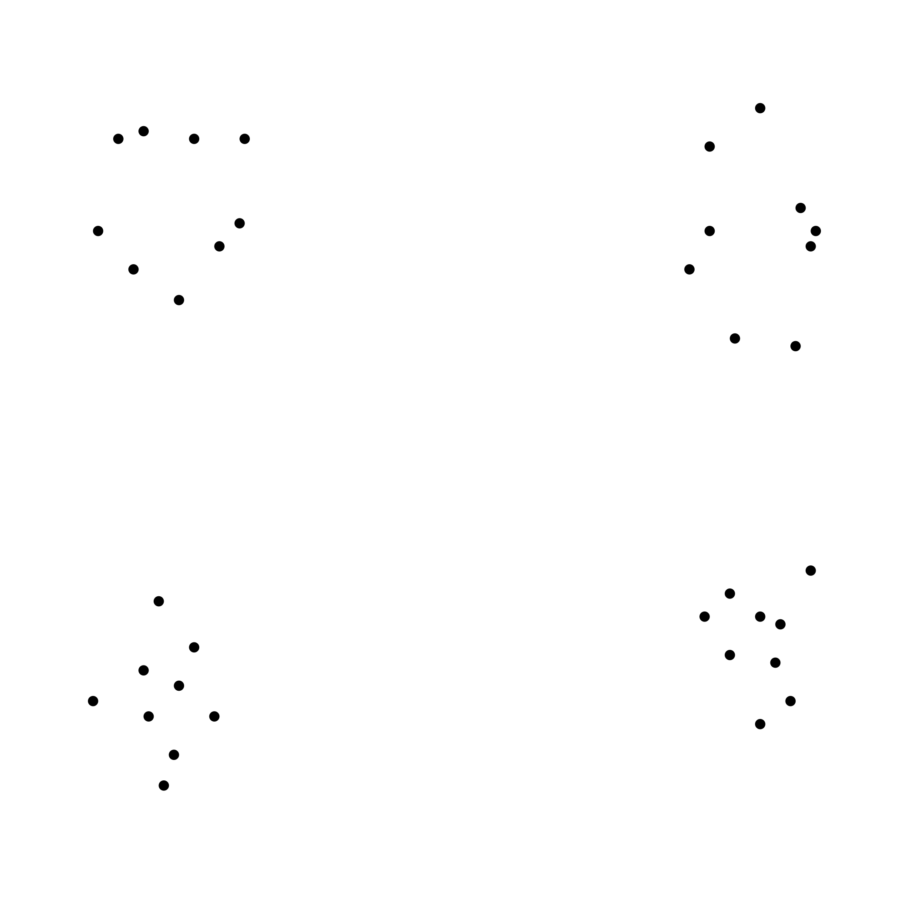
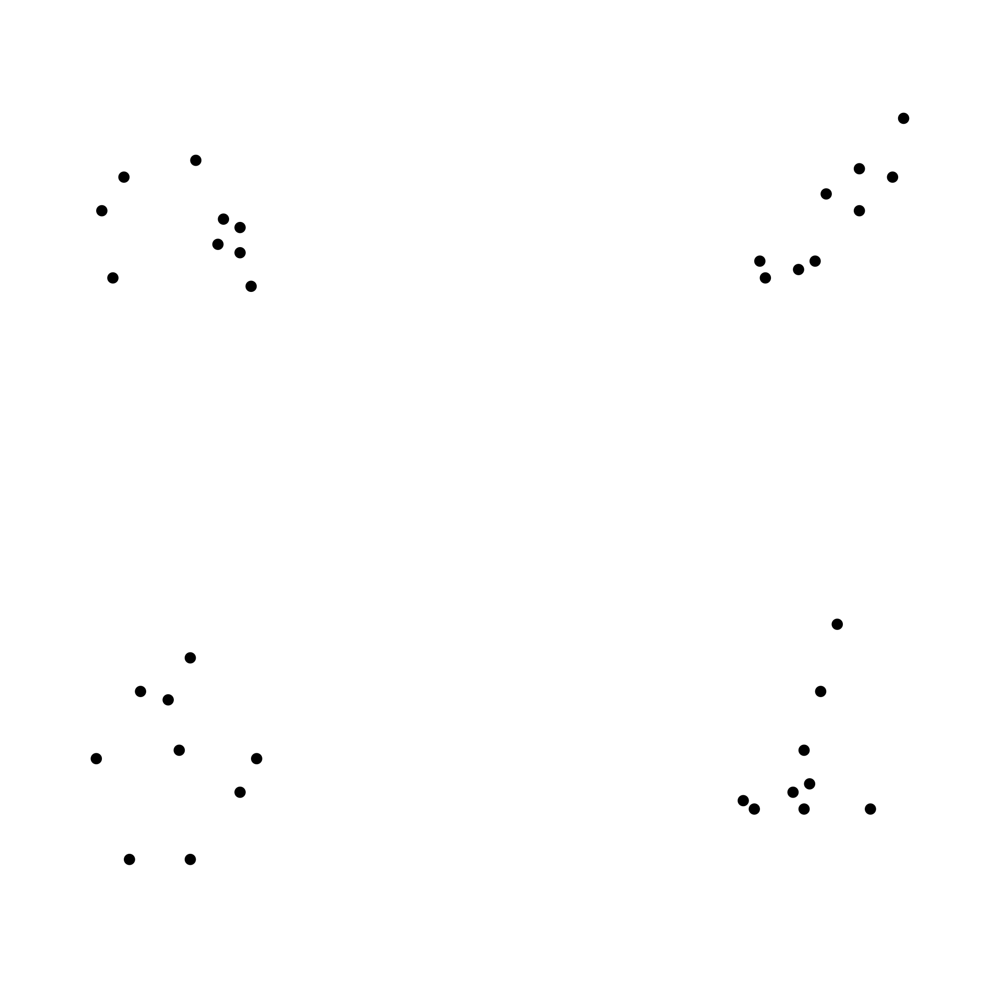

<!DOCTYPE html>
<html>
<head>
    <title>Dot Pattern Similarity Task</title>
    <script src="https://unpkg.com/jspsych@7.3.4"></script>
    <script src="https://unpkg.com/@jspsych/plugin-canvas-keyboard-response@1.1.3"></script>
    <script src="https://unpkg.com/@jspsych/plugin-html-slider-response@1.1.3"></script>
    <script src="https://unpkg.com/@jspsych/plugin-instructions@1.1.3"></script>
    <link href="https://unpkg.com/jspsych@7.3.4/css/jspsych.css" rel="stylesheet" type="text/css"></link>
    
    
    <style>
        

    /* * { border: 1px solid red; } */

        .jspsych-canvas-stimulus {
            position: fixed;
            bottom: 55%; /* Position from the top of the viewport */
            left: 12%;
            transform: translateX(-50%); /* Center horizontally */
            z-index: 50;
        }
        

        .prompt-container {
            position: fixed; /* Change to 'fixed' to keep it visible in the viewport */
            bottom: 10%; /* Position from the bottom of the viewport */
            text-align: center; /* Center the text */
            z-index: 30; /* Ensure it's above other elements */
        }
        .trial-counter {
            position: fixed; /* Position it at the bottom left */
            bottom: 10px;
            left: 10px;
            background-color: #f8f8f8;
            padding: 5px 10px;
            border-radius: 5px;
            z-index: 10;
        }
    </style>
    
</head>
<body></body>

<script>
    
    // const CANVAS_WIDTH = window.innerWidth * 0.8; // 80% of viewport width
    // const CANVAS_HEIGHT = window.innerHeight * 0.7; // 60% of viewport height
    const CANVAS_WIDTH = 350; 
    const CANVAS_HEIGHT = 300
    
    
    document.addEventListener('DOMContentLoaded', function() {
        let mainTrialsStarted = false
        const numPreliminaryTrials = 2; 
        
        function updateCanvasSize() {
            const maxWidth = window.innerWidth * 0.8; // Use 80% of window width
            const maxHeight = window.innerHeight * 0.6; // Use 60% of window height
            return {
                width: Math.min(650, maxWidth), // Ensure canvas is not wider than 650px or window width
                height: Math.min(350, maxHeight) // Ensure canvas is not taller than 350px or window height
            };
        }
        const canvasSize = updateCanvasSize(); // Initial canvas size
        
        
        
        //         window.addEventListener('resize', function() {
            //     // Optional: Adjust the canvas size on window resize for a fully responsive design
            //     const newCanvasSize = updateCanvasSize();
            //     const canvasElement = document.querySelector('.jspsych-canvas-stimulus canvas');
            //     if (canvasElement) {
                //         canvasElement.width = newCanvasSize.width;
                //         canvasElement.height = newCanvasSize.height;
                //         // You may need to redraw or adjust the layout here if you want to handle live resizing
                //     }
                // });
                
                
                const jsPsych = initJsPsych({
                    on_trial_start: function() {
                        if (mainTrialsStarted) { 
                            let counterDiv = document.querySelector('.trial-counter');
                            if (!counterDiv) {
                                counterDiv = document.createElement('div');
                                counterDiv.className = 'trial-counter';
                                // Append the trial counter to the jspsych-content-wrapper element
                                document.querySelector('.jspsych-content-wrapper').appendChild(counterDiv);
                            }
                            const currentTrialIndex = jsPsych.getProgress().current_trial_global + 1; 
                            const totalMainTrials = jsPsych.getProgress().total_trials - numPreliminaryTrials;
                            // Only update the counter for main trials
                            if(currentTrialIndex > numPreliminaryTrials) {
                                const currentMainTrial = currentTrialIndex - numPreliminaryTrials;
                                counterDiv.textContent = `Trial ${currentMainTrial} / ${totalMainTrials}`;
                            }
                        }
                    },
                    on_trial_finish: function() {
                        var trial_data = jsPsych.data.get().last(1);
                        console.log(trial_data.csv());
                    },
                    on_finish: function() {
                        jsPsych.data.get().localSave('csv', 'similarity_ratings.csv');
                    }
                });
                
                
                function drawPattern(context, pattern, xOffset, canvasWidth, canvasHeight) {
                    const dotSize = 1.9; // Size of the dots
                    const patternScale = 3.5; // Increased scale for larger patterns
                    
                    // Calculate the bounding box of the pattern
                    let minX = Math.min(...pattern.map(dot => dot.x));
                    let maxX = Math.max(...pattern.map(dot => dot.x));
                    let minY = Math.min(...pattern.map(dot => dot.y));
                    let maxY = Math.max(...pattern.map(dot => dot.y));
                    
                    // Determine the width and height of the pattern
                    let patternWidth = maxX - minX;
                    let patternHeight = maxY - minY;
                    
                    // Calculate available space for each pattern considering spacing and margin
                    const spacing = 60; // Adjusted space between patterns
                    const margin = 20; // Margin around the canvas
                    const availableWidth = (canvasWidth - spacing - 2 * margin) / 2;
                    const availableHeight = canvasHeight - 2 * margin;
                    
                    // Determine the scale factor to fit the pattern within the available space
                    const scaleX = availableWidth / patternWidth;
                    const scaleY = availableHeight / patternHeight;
                    const scale = Math.min(scaleX, scaleY) * patternScale; // Use the smallest scale factor and ensure it's not more than 1
                    
                    // Center the pattern on its half of the canvas
                    const centerX = xOffset + availableWidth / 2;
                    const centerY = canvasHeight / 2;
                    
                    pattern.forEach(dot => {
                        context.beginPath();
                        
                        // Apply the scaling and centering adjustments
                        const x = (dot.x - minX) * scale + centerX - (availableWidth * 0.5);
                        const y = (dot.y - minY) * scale + centerY - (patternHeight * scale / 2);
                        context.arc(x, y, dotSize, 0, 2 * Math.PI);
                        context.fill();
                    });
                }
                
                // Welcome page
                var welcome = {
                    type: jsPsychInstructions,
                    pages: [
                    'Welcome to the Dot Pattern Similarity Task. <br><br> Press "Next" to continue.'
                    ],
                    show_clickable_nav: true
                };
                
                // Instructions page
                var instructions = {
                    type: jsPsychInstructions,
                    pages: [
                    'In this task, you will be presented with pairs of dot patterns. <br><br>' +
                    'Your job is to rate the similarity of each pair using the number keys on your keyboard. ' + 
                    'Please press a key between 1 and 9 to indicate your rating, where 1 means "Not Similar" at all, ' +
                    'and 9 means "Very Similar". You can use any number between 1 and 9 to provide a rating that best ' +
                    'represents your perception of the similarity between the two patterns.<br><br>',
                    'Examples of Dot Patterns that are highly similar: ' +
                    '<br>' + 
                    '</img>', 
                    'Examples of Dot Patterns that are not similar: ' +
                    '<br>' + 
                    '</img>'
                    ], 
                    show_clickable_nav: true
                };
                
                
                function loadAndStartExperiment(callback) {
                    var xhr = new XMLHttpRequest();
                    xhr.open('GET', 'mc_patterns.json', true);
                    xhr.onload = function() {
                        if (xhr.status === 200) {
                            var json = JSON.parse(xhr.responseText);
                            var trials = createTrialsFromJson(json);
                            if(callback) callback(trials); // Ensure callback is called with the trials
                        } else {
                            console.error('There was a problem with the request.');
                        }
                    };
                    xhr.send();
                }
                
                function createTrialsFromJson(json) {
                    
                    const trials = [];
                    const keys = ['1','2','3','4','5','6','7','8','9']; // Allowed keys for response
                    
                    // Create a dot-pattern-container and append it to the body only once
                    const dotPatternContainer = document.createElement('div');
                    dotPatternContainer.className = 'dot-pattern-container';
                    document.body.appendChild(dotPatternContainer);
                    
                    for (let i = 0; i < json.length; i += 3) {
                        const patternSets = [
                        [json[i], json[i + 1]],
                        [json[i], json[i + 2]],
                        [json[i + 1], json[i + 2]]
                        ];
                        
                        patternSets.forEach(patternSet => {
                            const patterns = patternSet.map(trialData => {
                                return Array.from({length: 9}, (_, idx) => ({
                                    x: trialData[`x${idx + 1}`],
                                    y: trialData[`y${idx + 1}`]
                                }));
                            });
                            
                            trials.push({
                                type: jsPsychCanvasKeyboardResponse, // Use the Canvas Keyboard Response plugin
                                stimulus: function(c) {
                                    let ctx = c.getContext('2d');
                                    ctx.clearRect(0, 0, c.width, c.height);
                                    const spacing = 60; // Space between patterns
                                    const margin = 10; 
                                    const patternWidth = (c.width - spacing - 2 * margin) / 2;
                                    patterns.forEach((pattern, index) => {
                                        const xOffset = margin + index * (patternWidth + spacing);
                                        drawPattern(ctx, pattern, xOffset, c.width / patterns.length, c.height);
                                    });
                                },
                                canvas_size: [CANVAS_WIDTH, CANVAS_HEIGHT],
                                choices: keys,
                                prompt: '<p class="prompt-container">Rate the similarity of the patterns from 1-9 <br> (1=Not Similar, 9=Very Similar).</p>',
                                response_ends_trial: true,
                                on_start: function() {
                                    // Move the canvas to the dot-pattern-container on trial start
                                    const canvasElement = document.querySelector('.jspsych-canvas-stimulus');
                                    if (canvasElement) {
                                        dotPatternContainer.appendChild(canvasElement);
                                    }
                                },
                                data: {
                                    pattern_1: JSON.stringify(patterns[0]),
                                    pattern_2: JSON.stringify(patterns[1])
                                }
                            });
                        });
                    }
                    return trials;
                }
                
                loadAndStartExperiment(function(trials) {
                    mainTrialsStarted = true;
                    
                    var fullTimeline = [welcome, instructions].concat(trials);
                    jsPsych.run(fullTimeline);
                });
                
            });
        </script>
        </html>
        